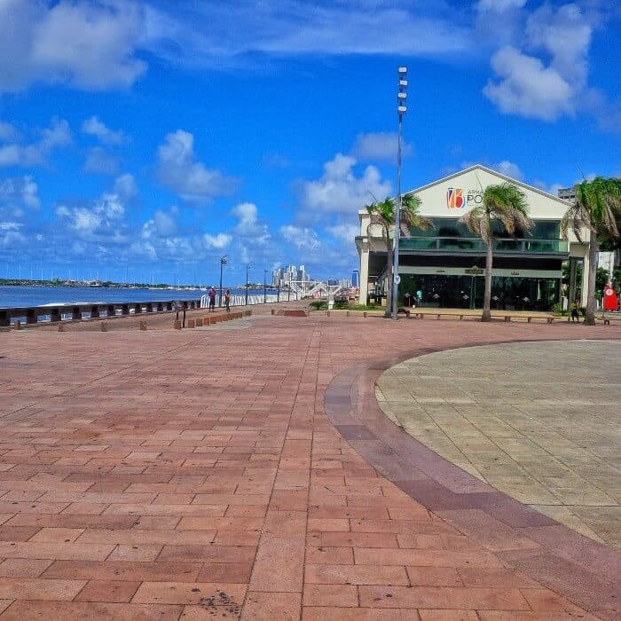

Aproveite os Pontos Turísticos!
Sempre com os melhores passeios por Recife!
- 1. Conhecer o conjunto arquitetônico eclético
- 2. Visitar o Parque das Esculturas de Francisco Brennand
- 3. Curtir a vista e o pôr-do-sol no espaço Armazéns do Porto 
- 4. Visitar o Centro de Artesanato de Pernambuco


O centro abre de segunda à sábado (9:00-19:00) e no domingo (10:00-16:00). Visite o site oficial para consultar os horários de atendimento atualizados.